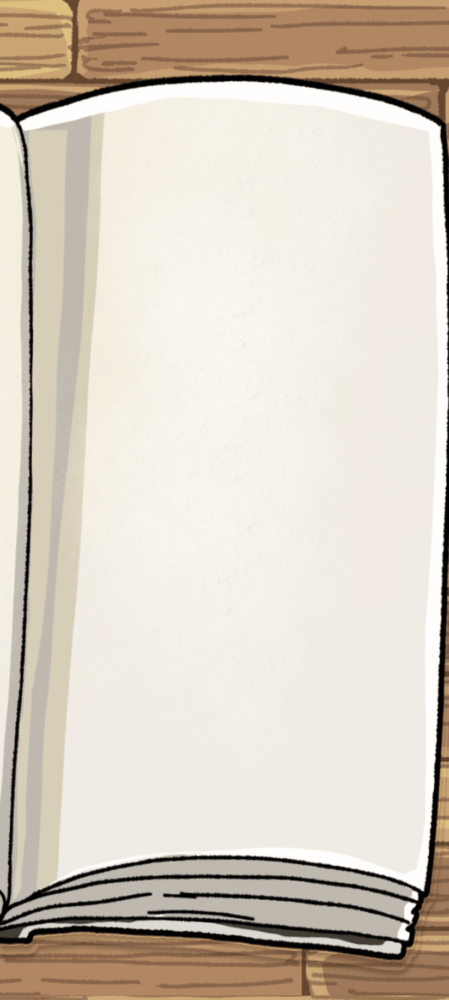
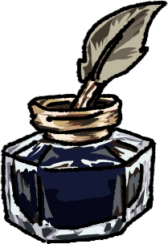

☰
성격
EMOTIONAL TEMPERAMENT
기분과 정서 성향
현재 기분을 고정하는 설정이 아니라, 같은 일을 겪어도 이 캐릭터답게 받아들이고 회복하도록 만드는 기준이에요.
평소 정서의 방향
낙천적인 편
기분 변화 폭
상황에 따라 달라짐
감정이 남는 시간
보통
좋은 일이 있을 때
미소와 말로 표현함
힘들 때 보이는 반응
잠시 거리를 둠
기분을 회복하는 방식
혼자 정리하며 회복
분노할 때 보이는 반응
차분히 이유를 확인함
유혹·호감 신호를 받을 때
알아도 모른 척함
이전
9
다음

저장